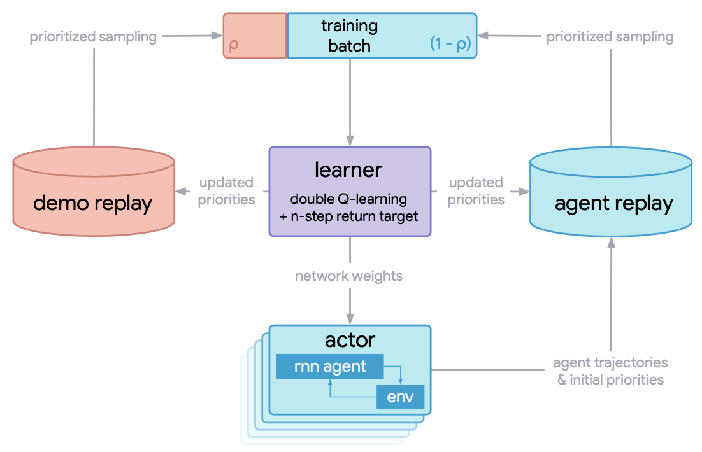
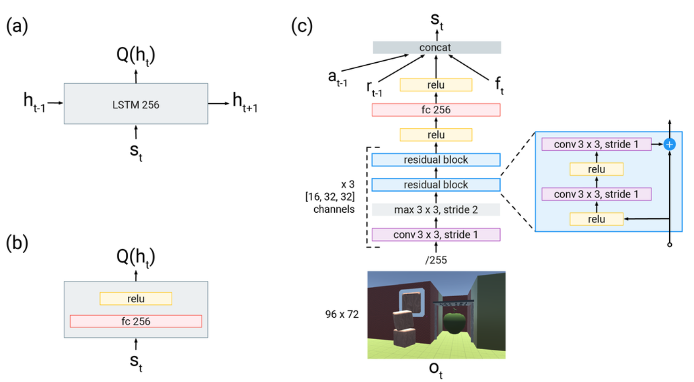
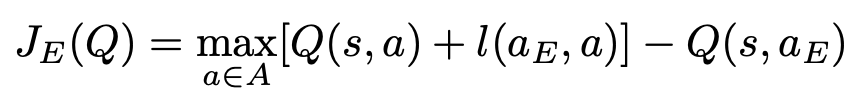
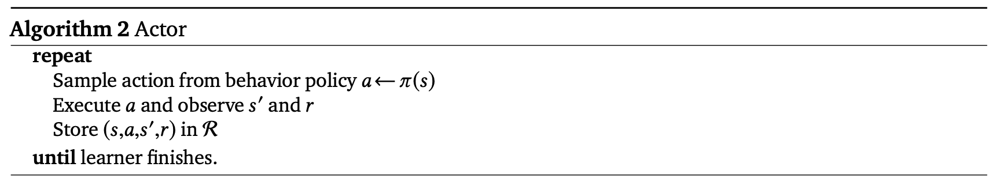
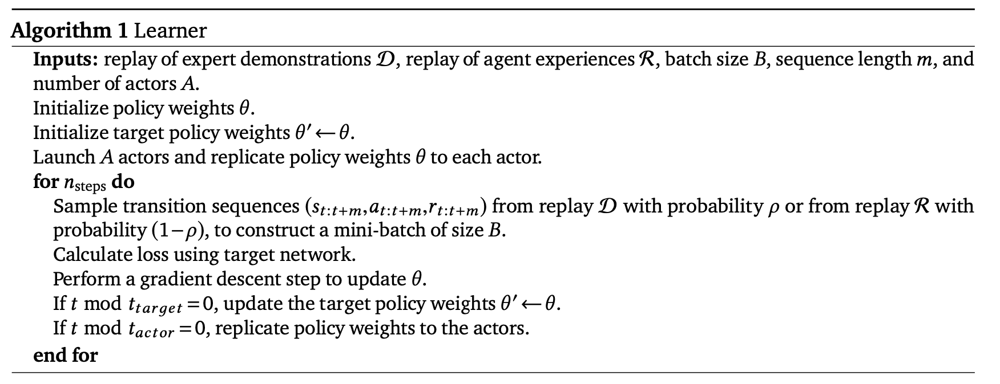

R2D3¶
概述¶
R2D3 (Recurrent Replay Distributed DQN from Demonstrations) 首次在论文 Making Efficient Use of Demonstrations to Solve Hard Exploration Problems 中提出, 它可以有效地利用专家演示轨迹来解决具有以下3个属性的问题：初始条件高度可变、部分可观察、困难探索。 此外他们还介绍了一组结合这三个属性的八个任务，并表明R2D3可以解决像这些任务，值得注意的是，在类似这样的任务上，其他一些最先进的方法，无论有还是没有专家演示轨迹，在数百亿次的探索步骤之后甚至可能 无法看到一条成功的轨迹。R2D3本质上是有效结合了R2D2算法的分布式框架和循环神经网络结构，以及DQfD中为从专家轨迹中学习而特别设计的损失函数。
核心要点¶
1.R2D3的基线强化学习算法是 R2D2, 可以参考我们的实现 r2d2 , 它本质上是一个基于分布式框架，采用了双Q网络(Double Q Networks), 决斗Q结构(Dueling Architecture)，多步时间差分损失函数(n-step TD loss)的DQN算法。
2.R2D3利用了DQfD的损失函数，包括：一步和n步的时序差分损失，神经网络参数的L2正则化损失(可选)，监督大间隔分类损失(supervised large margin classification loss)。 主要区别在于R2D3损失函数中的所有Q值都是序列样本通过循环神经Q网络后计算得到的，而原始DQfD中的Q值是通过一步的样本通过卷积网络和(或)前向全连接网络得到。
3.由于R2D3是在序列样本上进行运算的，所以其专家轨迹也应该以序列样本的方式给出。在具体实现中，我们往往是用另一个基线强化学习算法(如PPO或R2D2)收敛后得到的专家模型来 产生对应的专家演示轨迹，为此我们专门写了对应的策略函数来从这样的专家模型中产生专家演示, 参见 ppo_offpolicy_collect_traj.py 和 r2d2_collect_traj.py .
4.在训练Q网络时，采样的mini-batch中的每一条序列样本，有pho的概率是专家演示序列样本，有1-pho的概率是智能体与环境交互的经验序列样本。
5.R2D3的提出是为了解决初始条件高度可变、部分可观察环境中的困难探索问题，其他探索相关的论文，读者可以参考 NGU ，它是融合了 ICM 和 RND 等多种探索方法的一个综合体。
关键方程或关键框图¶
R2D3算法的总体分布式训练流程如下：
{kind=link}
learner中用于训练Q网络而采样的mini_batch包含了2部分: 1. 专家演示轨迹, 2. 智能体在训练过程中与环境交互产生的经验轨迹。 专家演示和智能体经验之间的比率是一个关键的超参数, 必须仔细调整以实现良好的性能。
R2D3算法的Q网络结构图如下：
{kind=link}
(a)R2D3智能体使用的recurrent head。 (b)DQfD智能体使用的feedforward head。(c)表示输入的是大小为96x72的图像帧， 接着通过一个ResNet，然后将前一时刻的动作，前一时刻的奖励和当前时刻的其他本体感受特征(proprioceptive features) \(f_{t}\) （包括加速度、avatar是否握住物体以及手与avatar的相对距离等辅助信息 连接(concat)为一个新的向量，传入a)和b)中的head，用于计算Q值。
下面描述r2d3的损失函数设置，和DQfD一样，不过这里所有的Q值都是通过上面所描述的循环神经网络计算得到。包括： 一步时序差分损失，n步时序差分损失，监督大间隔分类损失，神经网络参数的L2正则化损失(可选)。 时序差分损失确保网络满足贝尔曼方程，监督损失用于使得专家演示者的动作Q值至少比其他动作的Q值高一个间隔(一个常数值)，网络权重和偏差的L2正则化损失用于防止Q网络在相对数量较小的专家演示数据集上过拟合。
除了通常的1-step turn, R2D3还增加n-step return，有助于将专家轨迹的Q值传播到所有的早期的状态，从而获得更好的学习效果。 n步return为：
{kind=link}
监督损失对于训练的效果至关重要。由于存在以下的情况： 1.专家演示数据可能只覆盖完整状态空间的一小部分, 2.数据中并不包含,(某一特定状态，所有可能执行的动作)的状态动作对, 因此许多 状态动作对 从未在专家样本中出现过。如果我们仅使用Q-learning的loss朝着下一个状态的最大Q值方向来更新Q网络，网络将倾向于朝着那些不准确的Q值中的最高方向更新, 并且网络将在整个学习过程中通过Q函数传播这些误差，造成误差累计造成过估计问题。这里采用了 监督大边际分类损失(supervised large margin classification loss) 来缓解这个问题， 其计算公式为：
其中 \(a_{E}\) 表示专家执行的动作。 \(l(a_{E}, a)\) 是一个边际函数，当:math:a = a_{E} 时为 0，否则为一个正的常数。 最小化这个监督损失，可以迫使除专家演示者执行的动作以外的 其他动作的Q值至少比专家演示者的动作Q值低一个间隔。 通过加上这个损失，将专家数据集合中没有遇到过的动作的Q值变成合理范围内的值，并使学得的值函数导出的贪婪策略模仿专家演示者的策略。
我们在DI-engine中的具体实现如下所示：
l = margin_function * torch.ones_like(q) l.scatter_(1, action.unsqueeze(1).long(), torch.zeros_like(q)) JE = is_expert * (torch.max(q + l.to(device), dim=1)[0] - q_s_a)
{kind=link}
最终用于更新Q网络的整体损失是以上所有四种损失的线性组合：

伪代码¶
下面是R2D3智能体learner和actor的伪代码。单个学习器进程(learner process)从专家演示缓冲区和智能体经验缓冲区中采样数据样本用于计算损失函数，更新其Q网络参数。 A个并行的行动者进程(actor process)与不同的独立的A个环境实例交互以快速获得多样化的数据，然后将数据放入智能体经验缓冲区。 A个actor会定期获取learner上最新的参数。
 {kind=link}
{kind=link}
重要的实现细节¶
1. 用于计算损失函数的mini-batch是从专家演示缓冲区和智能体经验缓冲区采样得到的，mini-batch包含<batch_size>个序列样本，以pho的概率从专家演示缓冲区中采样，以1-pho的概率从智能体经验缓冲区中采样。 其具体实现方式如下，通过从<batch_size>大小个的[0，1]均匀分布中采样，如果采样值大于pho则选择一个专家演示轨迹 这<batch_size>个采样值中大于pho的采样值的个数即为本次mini-batch中专家演示所占的个数。
# The hyperparameter pho, the demo ratio, control the propotion of data coming
# from expert demonstrations versus from the agent's own experience.
expert_batch_size = int(
np.float32(np.random.rand(learner.policy.get_attribute('batch_size')) < cfg.policy.collect.pho
).sum()
)
agent_batch_size = (learner.policy.get_attribute('batch_size')) - expert_batch_size
train_data_agent = replay_buffer.sample(agent_batch_size, learner.train_iter)
train_data_expert = expert_buffer.sample(expert_batch_size, learner.train_iter)
2.由于基线算法R2D2采用有优先级的采样，对于一个序列样本，每一时刻的TD error是 使用1步TD error和n步TD error的和的绝对值，TD error在这个序列经历的所有时刻上的平均值和最大值的加权和
作为整个序列样本的优先级。由于专家数据和经验数据对应的loss函数不一样， 在R2D2中我们设置了独立的2个replay_buffer, 分别为专家演示的 expert_buffer ，和智能体经验的 replay_buffer ，
并且分开进行优先级采样和buffer中相关参数的更新。
# using the mixture of max and mean absolute n-step TD-errors as the priority of the sequence
td_error_per_sample = 0.9 * torch.max(
torch.stack(td_error), dim=0
)[0] + (1 - 0.9) * (torch.sum(torch.stack(td_error), dim=0) / (len(td_error) + 1e-8))
# td_error shape list(<self._unroll_len_add_burnin_step-self._burnin_step-self._nstep>, B), for example, (75,64)
# torch.sum(torch.stack(td_error), dim=0) can also be replaced with sum(td_error)
...
if learner.policy.get_attribute('priority'):
# When collector, set replay_buffer_idx and replay_unique_id for each data item, priority = 1.\
# When learner, assign priority for each data item according their loss
learner.priority_info_agent = deepcopy(learner.priority_info)
learner.priority_info_expert = deepcopy(learner.priority_info)
learner.priority_info_agent['priority'] = learner.priority_info['priority'][0:agent_batch_size]
learner.priority_info_agent['replay_buffer_idx'] = learner.priority_info['replay_buffer_idx'][
0:agent_batch_size]
learner.priority_info_agent['replay_unique_id'] = learner.priority_info['replay_unique_id'][
0:agent_batch_size]
learner.priority_info_expert['priority'] = learner.priority_info['priority'][agent_batch_size:]
learner.priority_info_expert['replay_buffer_idx'] = learner.priority_info['replay_buffer_idx'][
agent_batch_size:]
learner.priority_info_expert['replay_unique_id'] = learner.priority_info['replay_unique_id'][
agent_batch_size:]
# Expert data and demo data update their priority separately.
replay_buffer.update(learner.priority_info_agent)
expert_buffer.update(learner.priority_info_expert)
3.对于专家演示样本和智能体经验样本，我们分别对原数据增加一个键 is_expert 加以区分, 如果是专家演示样本，此键值为1，
如果是智能体经验样本，此键值为0，
# 如果是专家演示样本，此键值为1，
for i in range(len(expert_data)):
# for rnn/sequence-based alg.
expert_data[i]['is_expert'] = [1] * expert_cfg.policy.collect.unroll_len
...
# 如果是智能体经验样本，此键值为0
for i in range(len(new_data)):
new_data[i]['is_expert'] = [0] * expert_cfg.policy.collect.unroll_len
预训练。在智能体与环境交互之前，我们可以先利用专家演示样本预训练Q网络，期望能得到一个好的初始化参数，加速后续的训练进程。
for _ in range(cfg.policy.learn.per_train_iter_k): # pretrain
if evaluator.should_eval(learner.train_iter):
stop, reward = evaluator.eval(learner.save_checkpoint, learner.train_iter, collector.envstep)
if stop:
break
# Learn policy from collected demo data
# Expert_learner will train ``update_per_collect == 1`` times in one iteration.
train_data = expert_buffer.sample(learner.policy.get_attribute('batch_size'), learner.train_iter)
learner.train(train_data, collector.envstep)
if learner.policy.get_attribute('priority'):
expert_buffer.update(learner.priority_info)
实现¶
r2d3的策略 R2D3Policy 的接口定义如下：
- class ding.policy.r2d3.R2D3Policy(cfg: dict, model: Optional[Union[type, torch.nn.modules.module.Module]] = None, enable_field: Optional[List[str]] = None)[source]
- Overview:
Policy class of r2d3, from paper Making Efficient Use of Demonstrations to Solve Hard Exploration Problems .
- Config:
ID
Symbol
Type
Default Value
Description
Other(Shape)
1
typestr
dqn
RL policy register name, refer toregistryPOLICY_REGISTRYThis arg is optional,a placeholder2
cudabool
False
Whether to use cuda for networkThis arg can be diff-erent from modes3
on_policybool
False
Whether the RL algorithm is on-policyor off-policy4
prioritybool
False
Whether use priority(PER)Priority sample,update priority5
priority_IS_weightbool
False
Whether use Importance Sampling Weightto correct biased update. If True,priority must be True.6
discount_factorfloat
0.997, [0.95, 0.999]
Reward’s future discount factor, aka.gammaMay be 1 when sparsereward env7
nstepint
3, [3, 5]
N-step reward discount sum for targetq_value estimation8
burnin_stepint
2
The timestep of burnin operation,which is designed to RNN hidden statedifference caused by off-policy9
learn.updateper_collectint
1
How many updates(iterations) to trainafter collector’s one collection. Onlyvalid in serial trainingThis args can be varyfrom envs. Bigger valmeans more off-policy10
learn.batch_sizeint
64
The number of samples of an iteration11
learn.learning_ratefloat
0.001
Gradient step length of an iteration.12
learn.value_rescalebool
True
Whether use value_rescale function forpredicted value13
learn.target_update_freqint
100
Frequence of target network update.Hard(assign) update14
learn.ignore_donebool
False
Whether ignore done for target valuecalculation.Enable it for somefake termination env15
collect.n_sampleint
[8, 128]
The number of training samples of acall of collector.It varies fromdifferent envs16
collect.unroll_lenint
1
unroll length of an iterationIn RNN, unroll_len>1
- _forward_learn(data: dict) Dict[str, Any][source]
- Overview:
Forward and backward function of learn mode. Acquire the data, calculate the loss and optimize learner model.
- Arguments:
- data (
dict): Dict type data, including at least [‘main_obs’, ‘target_obs’, ‘burnin_obs’, ‘action’, ‘reward’, ‘done’, ‘weight’]
- data (
- Returns:
- info_dict (
Dict[str, Any]): Including cur_lr and total_loss cur_lr (
float): Current learning ratetotal_loss (
float): The calculated loss
- info_dict (
dqfd的损失函数 nstep_td_error_with_rescale 的接口定义如下：
- ding.rl_utils.td.dqfd_nstep_td_error_with_rescale(data: collections.namedtuple, gamma: float, lambda_n_step_td: float, lambda_supervised_loss: float, lambda_one_step_td: float, margin_function: float, nstep: int = 1, cum_reward: bool = False, value_gamma: Optional[torch.Tensor] = None, criterion: <module 'torch.nn.modules' from '/opt/hostedtoolcache/Python/3.8.12/x64/lib/python3.8/site-packages/torch/nn/modules/__init__.py'> = MSELoss(), trans_fn: Callable = <function value_transform>, inv_trans_fn: Callable = <function value_inv_transform>) torch.Tensor[source]
- Overview:
Multistep n step td_error + 1 step td_error + supervised margin loss or dqfd
- Arguments:
data (
dqfd_nstep_td_data): the input data, dqfd_nstep_td_data to calculate lossgamma (
float): discount factorcum_reward (
bool): whether to use cumulative nstep reward, which is figured out when collecting datavalue_gamma (
torch.Tensor): gamma discount value for target q_valuecriterion (
torch.nn.modules): loss function criterionnstep (
int): nstep num, default set to 10
- Returns:
loss (
torch.Tensor): Multistep n step td_error + 1 step td_error + supervised margin loss, 0-dim tensortd_error_per_sample (
torch.Tensor): Multistep n step td_error + 1 step td_error + supervised margin loss, 1-dim tensor
- Shapes:
data (
q_nstep_td_data): the q_nstep_td_data containing [‘q’, ‘next_n_q’, ‘action’, ‘next_n_action’, ‘reward’, ‘done’, ‘weight’ , ‘new_n_q_one_step’, ‘next_n_action_one_step’, ‘is_expert’]q (
torch.FloatTensor): \((B, N)\) i.e. [batch_size, action_dim]next_n_q (
torch.FloatTensor): \((B, N)\)action (
torch.LongTensor): \((B, )\)next_n_action (
torch.LongTensor): \((B, )\)reward (
torch.FloatTensor): \((T, B)\), where T is timestep(nstep)done (
torch.BoolTensor) \((B, )\), whether done in last timesteptd_error_per_sample (
torch.FloatTensor): \((B, )\)new_n_q_one_step (
torch.FloatTensor): \((B, N)\)next_n_action_one_step (
torch.LongTensor): \((B, )\)is_expert (
int) : 0 or 1
Note
我们目前的r2d3策略实现中网络的输入只是时刻t的状态观测，不包含时刻t-1的动作和奖励, 也不包括额外的信息向量 \(f_{t}\) .
基准算法性能¶
我们在PongNoFrameskip-v4环境上，做了一系列对比实验，以验证：1.用于训练的一个mini-batch中专家样本的占比pho, 2.专家演示所占比例, 3.是否利用预训练与l2正则化等不同参数设置对r2d3算法最终性能的影响。
Note
我们的专家数据通过 ppo_offpolicy_collect_traj.py 产生, 其专家模型来自于r2d2算法在该环境上训练到收敛后得到的专家模型。以下所有实验seed=0。
r2d2基线算法设置记为r2d2_n5_bs2_ul40_upc8_tut0.001_ed1e5_rbs1e5_bs64, 其中：
n表示nstep,
bs表示burnin_step,
ul表示unroll_len,
upc表示update_per_collect,
tut表示target_update_theta,
ed表示eps_decay,
rbs表示replay_buffer_size,
bs表示batch_size,
具体参见 r2d2 pong config .
- 测试在用于训练的一个mini-batch中专家样本的占比的影响。观测1: pho需要适中，取1/4
蓝线 pong_r2d2_rbs1e4
橙线 pong_r2d3_r2d2expert_k0_pho1-4_rbs1e4_1td_l2_ds5e3
灰线 pong_r2d3_r2d2expert_k0_pho1-16_rbs1e4_1td_l2_ds5e3
红线 pong_r2d3_r2d2expert_k0_pho1-2_rbs1e4_1td_l2_ds5e3
- 测试总的专家样本库的大小的影响。观测2：demo size需要适中，取5e3
橙线 pong_r2d2_rbs2e4
天蓝线 pong_r2d3_r2d2expert_k0_pho1-4_rbs2e4_1td_l2_ds5e3
蓝线 pong_r2d3_r2d2expert_k0_pho1-4_rbs2e4_1td_l2_ds1e3
绿线 pong_r2d3_r2d2expert_k0_pho1-4_rbs2e4_1td_l2_ds1e4
- 测试是否预训练以及L2正则化的影响。观测3：预训练和L2正则化影响不大
橙线 r2d2_rbs2e4_rbs2e4
蓝线 pong_r2d3_r2d2expert_k0_pho1-4_rbs2e4_1td_l2
粉红线 pong_r2d3_r2d2expert_k0_pho1-4_rbs2e4_1td_nol2
深红线 pong_r2d3_r2d2expert_k100_pho1-4_rbs2e4_1td_l2
绿线 pong_r2d3_r2d2expert_k100_pho1-4_rbs2e4_1td_nol2
{kind=link}
{kind=link}
{kind=link}
参考资料¶
Paine T L, Gulcehre C, Shahriari B, et al. Making efficient use of demonstrations to solve hard exploration problems[J]. arXiv preprint arXiv:1909.01387, 2019.
Kapturowski S, Ostrovski G, Quan J, et al. Recurrent experience replay in distributed reinforcement learning[C]//International conference on learning representations. 2018.
Badia A P, Sprechmann P, Vitvitskyi A, et al. Never give up: Learning directed exploration strategies[J]. arXiv preprint arXiv:2002.06038, 2020.
Burda Y, Edwards H, Storkey A, et al. Exploration by random network distillation[J]. https://arxiv.org/abs/1810.12894v1. arXiv:1810.12894, 2018.
Pathak D, Agrawal P, Efros A A, et al. Curiosity-driven exploration by self-supervised prediction[C]//International conference on machine learning. PMLR, 2017: 2778-2787.
Piot, B.; Geist, M.; and Pietquin, O. 2014a. Boosted bellman residual minimization handling expert demonstrations. In European Conference on Machine Learning (ECML).